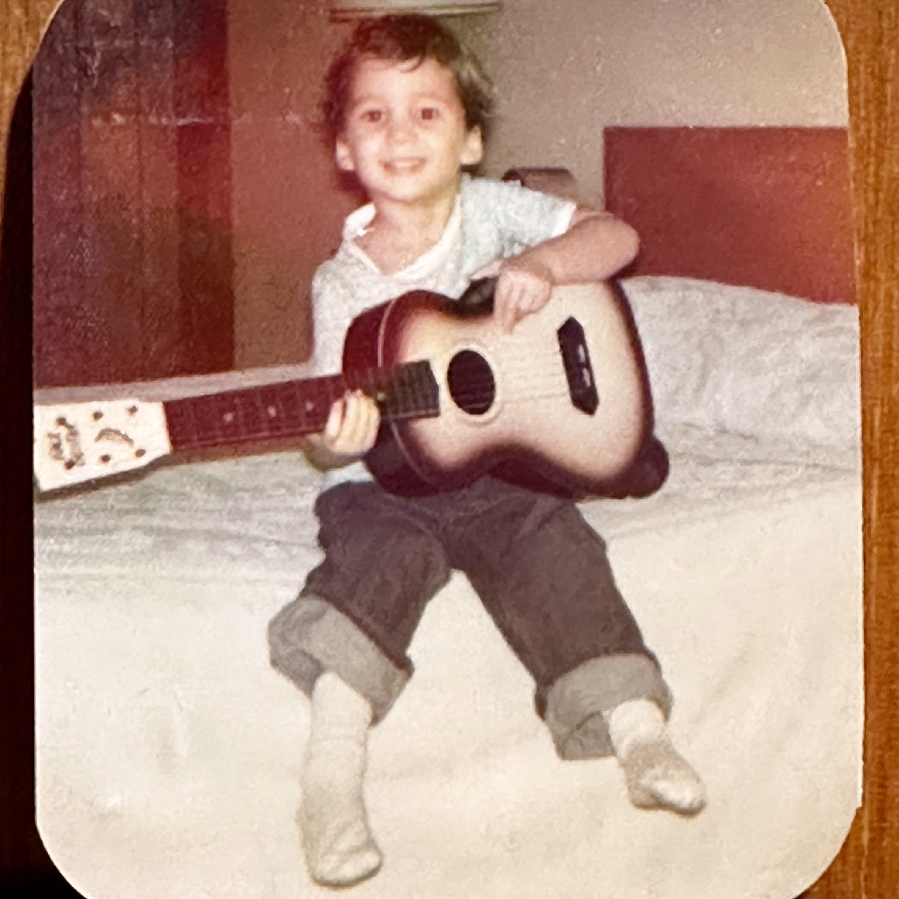

Drew Todd
Mostly better than average...
Just a south-county musician, guitar picker, and blues nerd. Hit the buttons above if you want to yap about the same. Or maybe hire me for a gig. Or whatever.
Just a south-county musician, guitar picker, and blues nerd. Hit the buttons above if you want to yap about the same. Or maybe hire me for a gig. Or whatever.